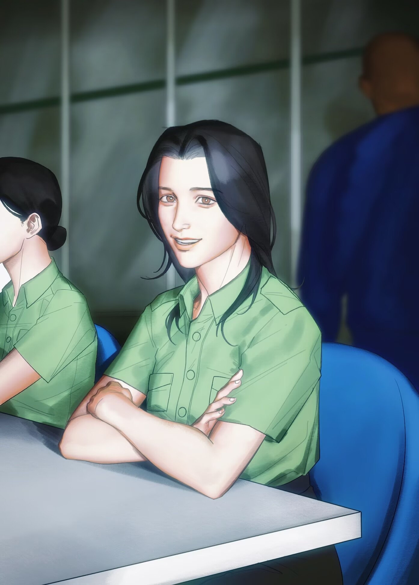
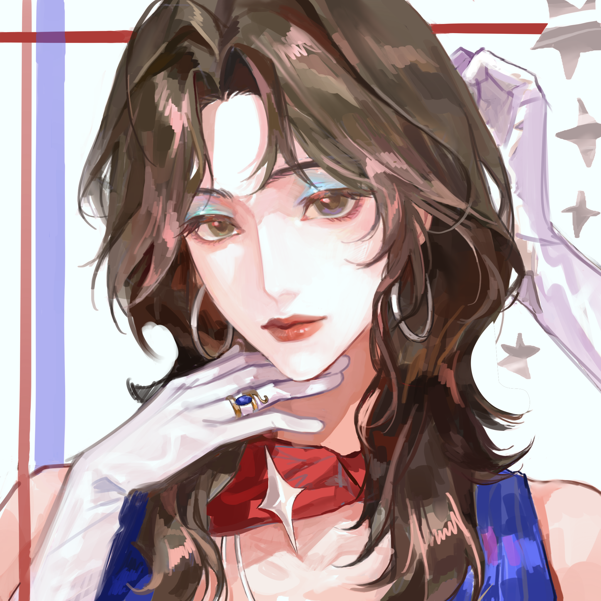
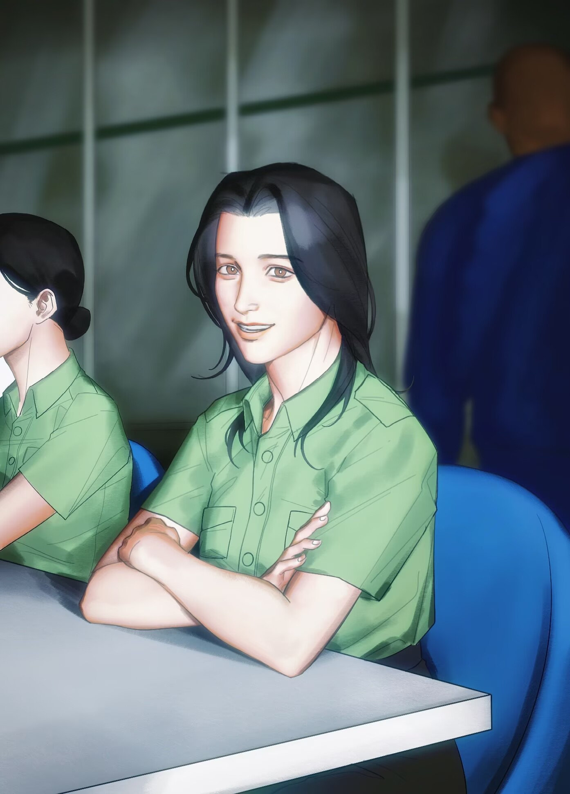
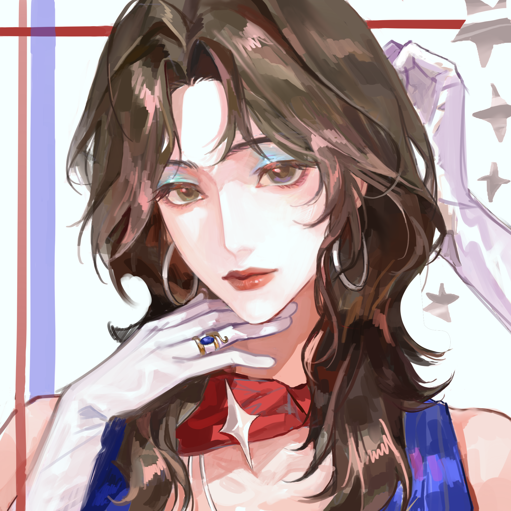
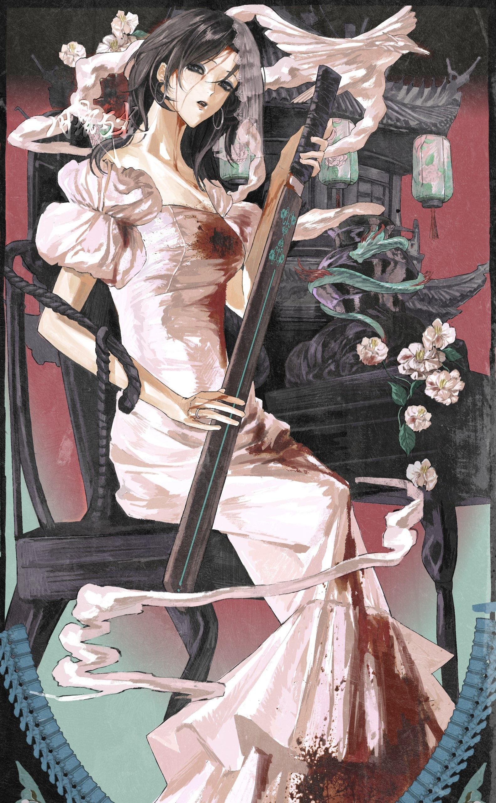
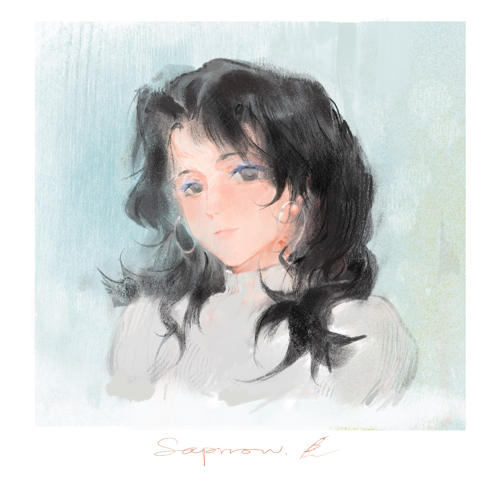
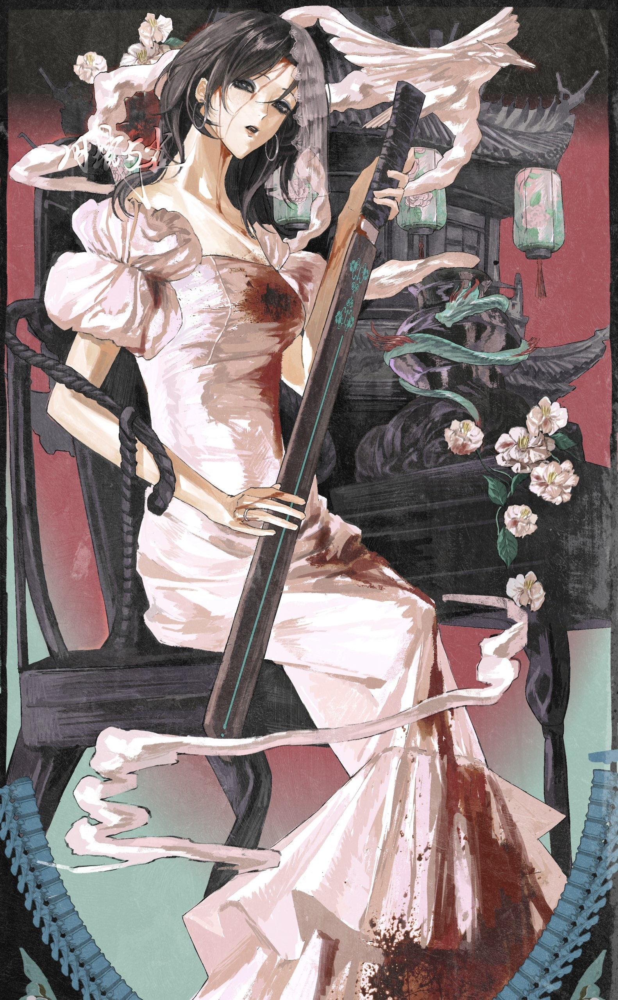
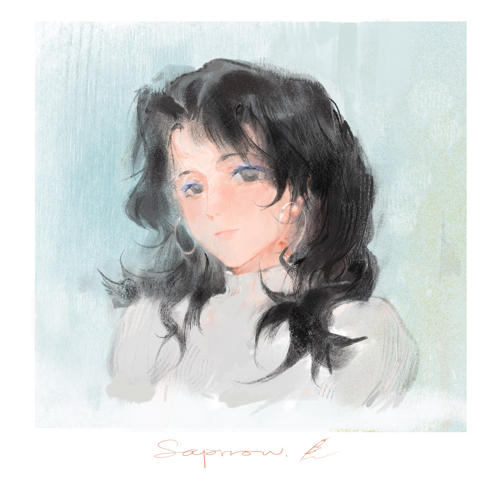

下颌角明显的方圆脸，笑起来只有左边酒窝。开扇内双，骨相明显，冷感强。鼻梁有一个突出的小节，说是美人都会有这样的凸起，但或许也是她性格中坚硬部分的某种隐喻。
眸色清透棕黑，与她的兄长一样，在阳光下炫出琥珀色的明亮，隐约有某种猫科动物的特点。
下颌角明显的方圆脸，笑起来只有左边酒窝。开扇内双，骨相明显，冷感强。鼻梁有一个突出的小节，说是美人都会有这样的凸起，但或许也是她性格中坚硬部分的某种隐喻。
眸色清透棕黑，与她的兄长一样，在阳光下炫出琥珀色的明亮，隐约有某种猫科动物的特点。
高家的小女儿，在"雀"这个温顺的名字之下，隐藏的是"雌鹰"的本质。她像雾一样难以捉摸，又像风一样无法被禁锢。
她是军人，拥有极高的狩猎直觉和生存智慧；她也是舞者，骨相清晰，美得具有攻击性。她喜爱蓝色眼影、夸张的耳环与隐秘的纹身，或许是一种迟来的、无声的叛逆宣言。
她骨相好，气质冶然，笑起来时脸上的阴影更加深重，显得五官愈发清晰。美人的美就是清晰的，只不过过度的清晰会显得不像这个世界的人，换言之是郁森森的，像幽灵，或者美杜莎。
随身携带军官证、打火机和烟盒，喜欢抽煊赫门和钻石荷花；订婚戒指是一枚卡地亚铂金素戒，颇为低调，在排练时与和高城相处时会摘下。
左腕常年佩戴一枚蓝色浪琴机械表，表带真皮棕色，据悉为兄长所赠生日礼物；金丝半框眼镜一副，200度近视，日常不佩戴，仅阅读时使用；香奈儿钱包，夹层内有与高城在年少时的合照。
点击查看不同时期的着装稿件
 



 


